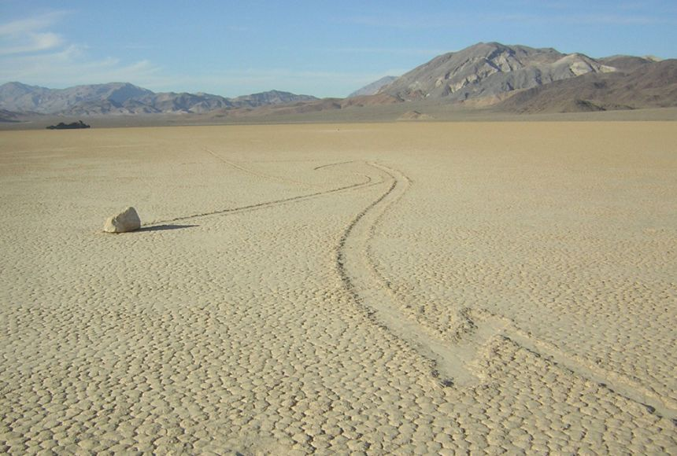

Ecosystem
An ecosystem is defined as a community of lifeforms in concurrence with non-living components, interacting
with each other.

What is an Ecosystem?
An ecosystem is a structural and functional unit of ecology where the living organisms interact with each other and the surrounding environment. In other words, an ecosystem is a chain of interactions between organisms and their environment. The term “Ecosystem” was first coined by A.G.Tansley, an English botanist, in 1935.
Structure of the Ecosystem
The structure of an ecosystem is characterised by the organisation of both biotic and abiotic components. This includes the distribution of energy in our environment. It also includes the climatic conditions prevailing in that particular environment.
The structure of an ecosystem can be split into two main components, namely:
- Biotic Components
- Abiotic Components
The biotic and abiotic components are interrelated in an ecosystem. It is an open system where the energy and components can flow throughout the boundaries.
Biotic Components
Biotic components refer to all living components in an ecosystem. Based on nutrition, biotic components can be categorised into autotrophs, heterotrophs and saprotrophs (or decomposers).
- Producer all autotrophs such as plants. They are called autotrophs as they can produce food through the process of photosynthesis. Consequently, all other organisms higher up on the food chain rely on producers for food.
- Consumers or heterotrophs are organisms that depend on other organisms for food.
Consumers are further classified into primary consumers, secondary consumers and tertiary consumers.
- Primary Consumers are always herbivores as they rely on producers for food.
- Secondary consumers depend on primary consumers for energy. They can either be carnivores or omnivores.
- Tertiary consumers are organisms that depend on secondary consumers for food. Tertiary consumers can also be carnivores or omnivores.
- Quaternary consumers are present in some food chains. These organisms prey on tertiary consumers for energy. Furthermore, they are usually at the top of a food chain as they have no natural predators.
- Decomposer include saprophytes such as fungi and bacteria. They directly thrive on the dead and decaying organic matter. Decomposers are essential for the ecosystem as they help in recycling nutrients to be reused by plants.
Abiotic Components
Abiotic components are the non-living component of an ecosystem. It includes air, water, soil, minerals, sunlight, temperature, nutrients, wind, altitude, turbidity, etc.
Functions of Ecosystem
The function of the ecosystem are as follows:
- It regulates the essential ecological processes, supports life systems and renders stability.
- It is also responsible for the cycling of nutrients between biotic and abiotic components.
- It maintains a balance among the various trophic levels in the ecosystem.
- It cycles the minerals through the biosphere.
- The abiotic components help in the synthesis of organic components that involve the exchange of energy
So the functional units of an ecosystem or functional components that work together in an ecosystem are:
- Productivity-It refers to the rate of biomass production.
- Energy flow- It is the sequential process through which energy flows from one trophic level to another. The energy captured from the sun flows from producers to consumers and then to decomposers and finally back to the environment.
- Decomposition- It is the process of breakdown of dead organic material. The top-soil is the major site for decomposition.
- Nutrient cycling- In an ecosystem nutrients are consumed and recycled back in various forms for the utilisation by various organisms.
An ecosystem can be as small as an oasis in a desert, or as big as an ocean, spanning thousands of miles. There are two types of ecosystem:
- Terrestrial Ecosystem
- Aquatic Ecosystem
Terrestrial Ecosystem
Terrestrial ecosystems are exclusively land-based ecosystems. There are different types of terrestrial ecosystems distributed around various geological zones. They are as follows:
- Forest Ecosystem
- Grassland Ecosystem
- Tundra Ecosystem
- Desert Ecosystem
Forest Ecosystem
A forest ecosystem consists of several plants, particularly trees, animals and microorganisms that live in coordination with the abiotic factors of the environment. Forests help in maintaining the temperature of the earth and are the major carbon sink.

Grassland Ecosystem
In a grassland ecosystem, the vegetation is dominated by grasses and herbs. Temperate grasslands and tropical or savanna grasslands are examples of grassland ecosystems.
Tundra Ecosystem
Tundra ecosystems are devoid of trees and are found in cold climates or where rainfall is scarce. These are covered with snow for most of the year. Tundra type of ecosystem is found in the Arctic or mountain tops.

Desert Ecosystem
Deserts are found throughout the world. These are regions with little rainfall and scarce vegetation. The days are hot, and the nights are cold.
Aquatic Ecosystem
Aquatic ecosystems are ecosystems present in a body of water. These can be further divided into two types, namely:

- Freshwater Ecosystem
- Marine Ecosystem
Freshwater Ecosystem
The freshwater ecosystem is an aquatic ecosystem that includes lakes, ponds, rivers, streams and wetlands. These have no salt content in contrast with the marine ecosystem.
Marine Ecosystem
The marine ecosystem includes seas and oceans. These have a more substantial salt content and greater biodiversity in comparison to the freshwater ecosystem.